About the project
I took this on at the start of Winter semester with a simple goal: learn the design process end to end and get comfortable in Figma.
tl;dr
Focus Friend users need a way to stay motivated that isn't only about collecting in-game currency, because they want to keep using the app after they've bought all the furniture. I designed personal goals, badges, and customizable focus areas that give people a reason to come back.
Context
Focus Friend is a "cozy gaming" focus app for iOS and Android. When you set a focus timer, the main character (a bean) knits socks and scarves for you. You trade those for furniture and house expansions. A recently released feature tracks how often you focus, and the app is branded as an ADHD-friendly tool.
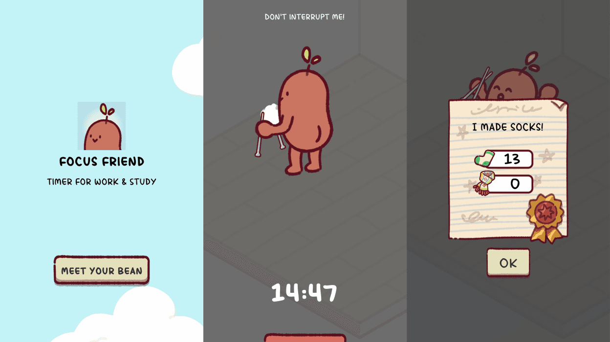
What users were saying
I used Perplexity to find real user comments online, then read through the most relevant links to find the problems people kept running into.
John Green
Said it was too easy to get through the content. Once he had, he lost motivation to use the app.
Many users said the same thing: once they "burned" through the content, they stopped opening it. Many also wanted more clothing for the bean and more detailed stats.
Many kinds of focus
Studying, family time, limiting screen time, chores, watching TV, and language learning.
Assumptions going in
- Varied usePeople use Focus Friend to study, do chores, spend family time, stop scrolling, and more.
- Motivation gapPeople want to use it more but lack the motivation.
- Content is lovedPeople enjoy the current content and art style.
Mapping the features people already use
I sketched a simple interaction map of the current app to see which features these users relied on most.
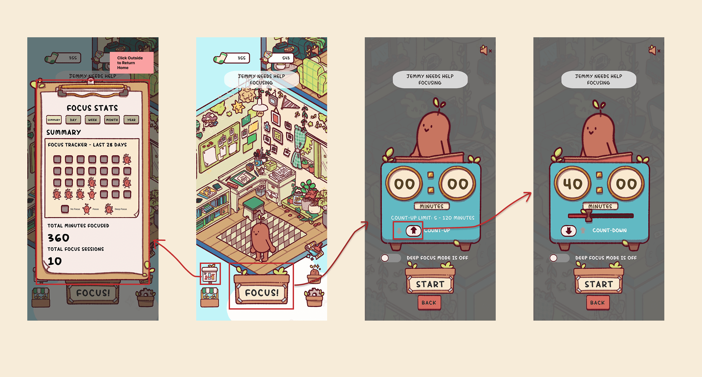
Refining the problem statement
Focus Friend users lose motivation over time because the app's content, rewards, and progression can feel limited after continued use. Users enjoy the focus tools and overall experience, but without fresh incentives it's harder to stay engaged.
Problem statement
How similar apps keep people coming back
Finch
A self-care app where checking off goals earns gems to dress your finch and decorate its room. Similar theme and very popular, but much more complex.
Pokémon Sleep
A gamified sleep tracker built around cooking recipes and logging sleep. Chosen for how well it brings people back even after everything is unlocked.
Forest
A cozy focus app that blocks other apps, has two timer types, lets you tag sessions, and uses emotional nudges to keep you from breaking focus.
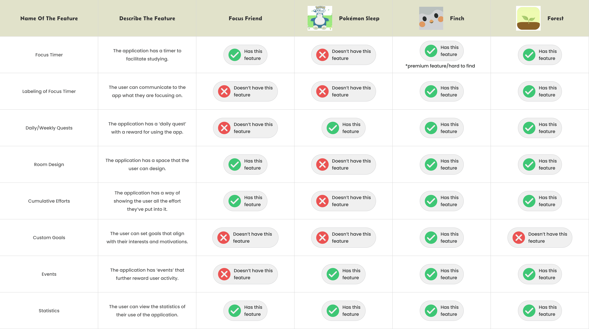
Who I was designing for
From my research and assumptions I built two personas to guide the design.
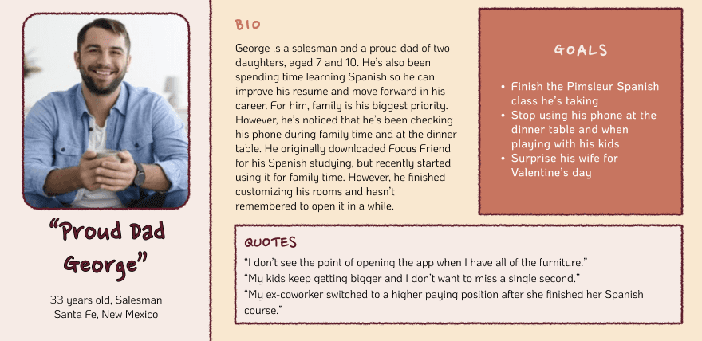
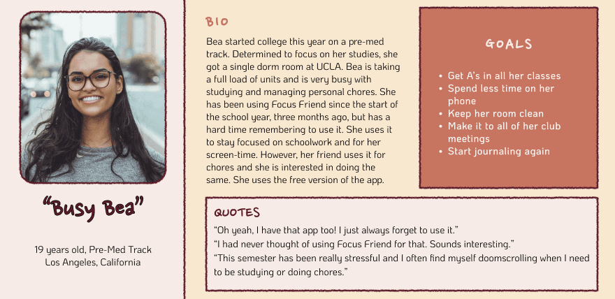
What the research pointed to
The comparative analysis and personas both pointed to goals and session labeling. Labeling came up in many Reddit threads, and most popular competitors already had it. It would also strengthen the goals section and give people a reason to open the app more often.
From grey boxes to the Focus Friend look
I wanted goals that users could personalize as well as goals set by the app. I wireframed a few ways to show this information, then matched the final version to the app's original visual style. This is where I learned auto-layout and how to keep components consistent in Figma.
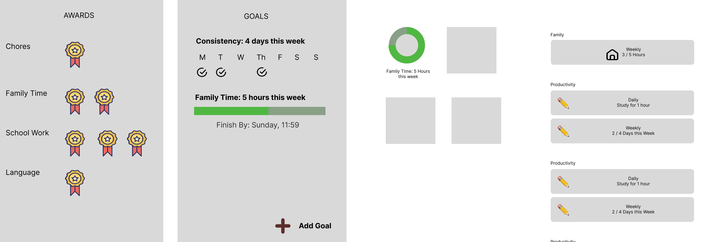
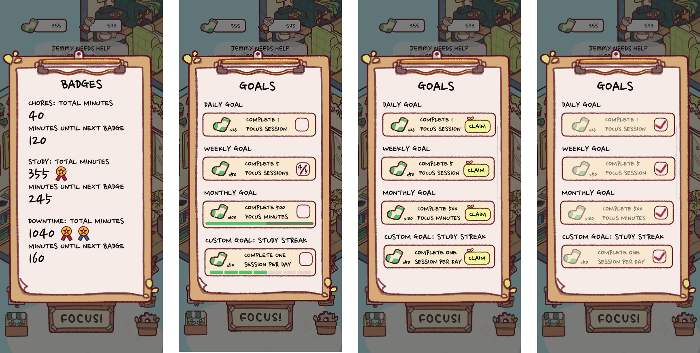
Adding focus areas
Next I worked out how "areas" could work. People use the app in so many ways that it needed to be customizable, but most people only use it for a handful of things. Going back to my personas and problem statement kept the feature small: a few areas you can turn on, rename, and track toward badges.
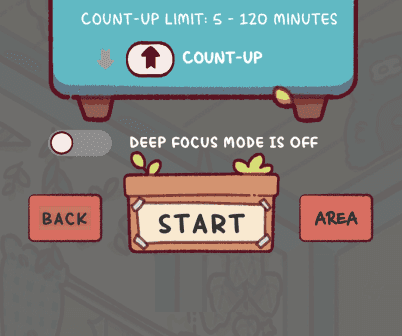
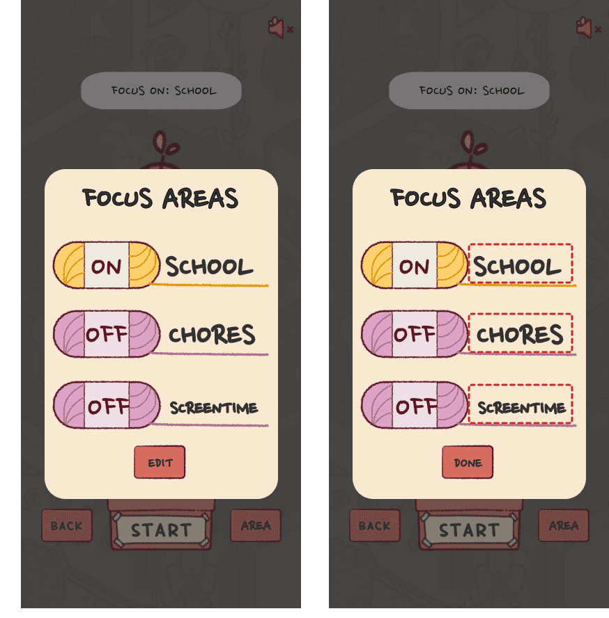
The redesign, in context
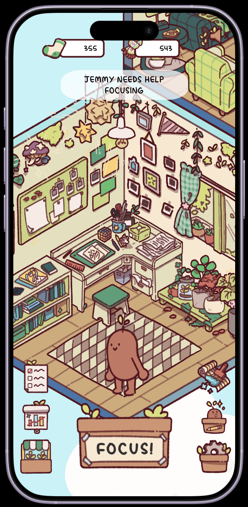
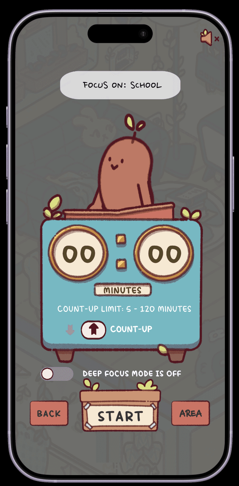
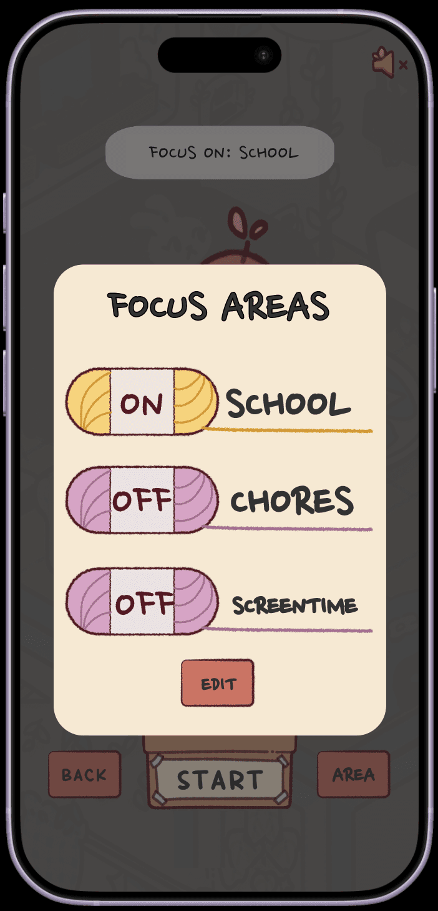
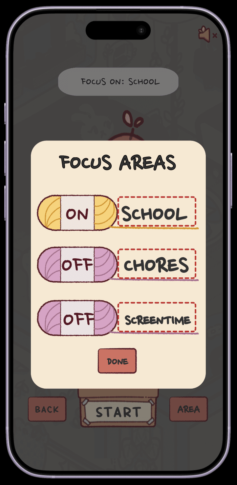
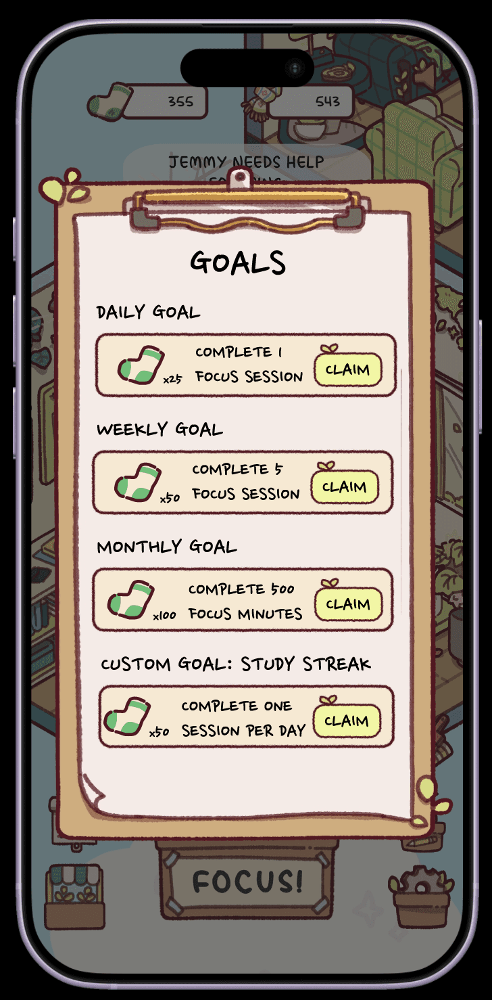
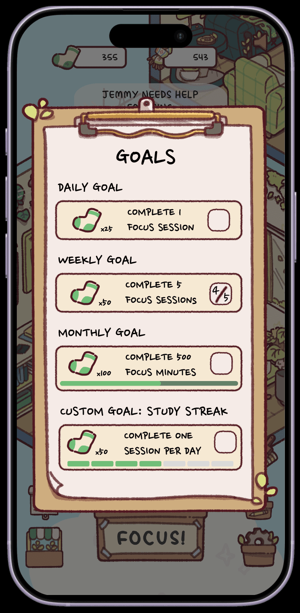
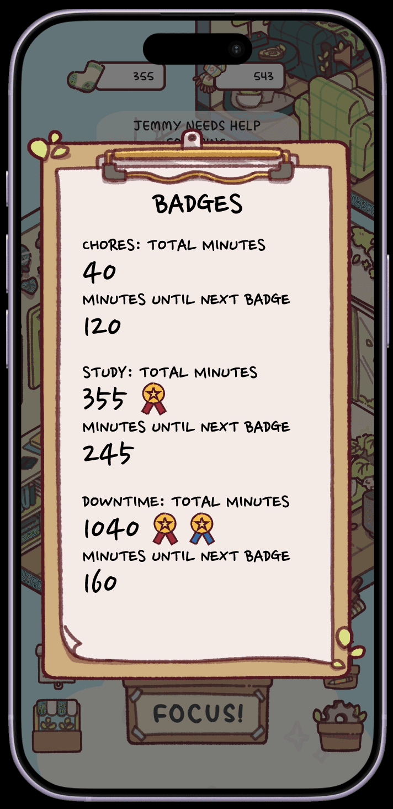
What I learned
Public comments are a starting point
Reddit threads and reviews surfaced real patterns fast, but they're assumptions until I talk to users directly.
Fit the existing style
Matching Focus Friend's look made new features feel native, and taught me auto-layout and components in Figma.
Test it
My next step would be usability testing the goals and areas flows with real Focus Friend users.